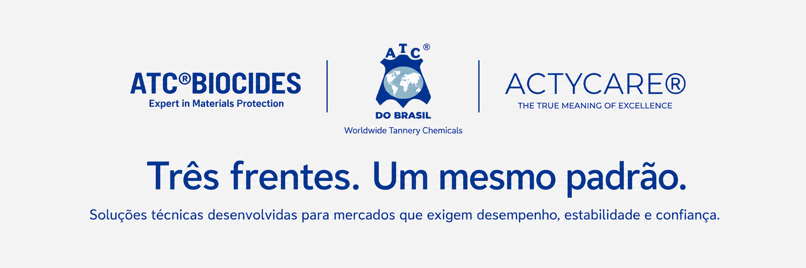

Três frentes. Um mesmo padrão.

Química especializada para você e sua empresa
Desde 1997, fazemos parte da trajetória da ATC Chemicals, empresa francesa fundada em 1973 e reconhecida internacionalmente por sua expertise no desenvolvimento de tecnologias químicas.
Conhecimento técnico, desenvolvimento aplicado e atendimento consultivo se unem para atender indústrias que valorizam desempenho, segurança e confiabilidade.
Essa expertise se expressa em três frentes de negócios, distintas em suas aplicações, mas conectadas pelo mesmo padrão de qualidade, precisão e excelência.
ATC® Tannery
Chemicals
Frente da ATC do Brasil dedicada ao mercado de couros e curtumes, reunindo soluções químicas desenvolvidas para apoiar diferentes etapas do processo produtivo. Atua com foco em performance, padronização, acabamento e suporte técnico especializado, contribuindo para a obtenção de couros com maior qualidade, estabilidade e valor agregado.
Com uma abordagem técnica e consultiva, a ATC® Tannery Chemicals acompanha as exigências da indústria coureira, oferecendo soluções alinhadas à eficiência dos processos, à consistência dos resultados e ao alto padrão esperado pelo mercado.
ATC®BIOCIDES
Na ATC®BIOCIDES, unimos ciência aplicada, inovação contínua e visão de futuro para desenvolver soluções biocidas de alta performance que elevam os padrões de qualidade, segurança e sustentabilidade da indústria. Com presença global e expertise consolidada, atuamos como parceiros estratégicos, oferecendo soluções confiáveis que protegem, preservam e potencializam produtos e processos em diversos segmentos industriais.


ACTYCARE®
ACTYCARE® é a linha de especialidades conservantes da ATC® dedicada ao universo de cuidados pessoais e cosméticos.
Mais do que acompanhar as transformações do mercado, ACTYCARE® representa uma forma contemporânea e sofisticada de pensar a conservação cosmética.
Em cosméticos, excelência não se limita à aparência ou à performance inicial. Ela deve permanecer presente ao longo de toda a experiência do produto.
ACTYCARE® nasce do encontro entre ciência e sofisticação para apoiar o desenvolvimento de formulações estáveis, seguras e confiáveis, respeitando suas características técnicas, sensoriais e estéticas.
Cada solução é desenvolvida para integrar-se com fluidez a diferentes sistemas formulativos, contribuindo para preservar a qualidade do produto sem comprometer sua identidade.
Mais do que uma linha de especialidades conservantes, ACTYCARE® representa uma forma superior de pensar a preservação cosmética.
É a união entre tradição, precisão técnica e visão contemporânea para desenvolver soluções que valorizam formulações, elevam marcas e expressam, com elegância e autoridade, o verdadeiro significado da excelência.
www.actycare.com